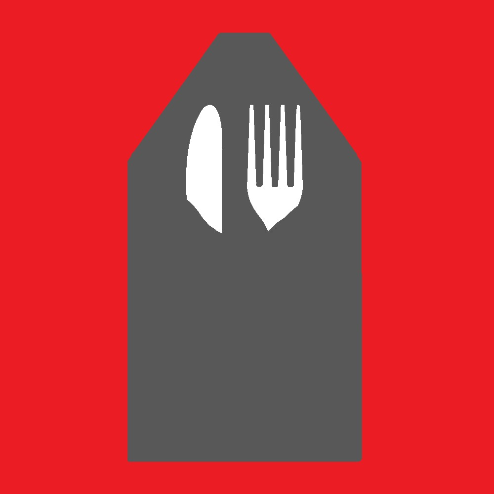
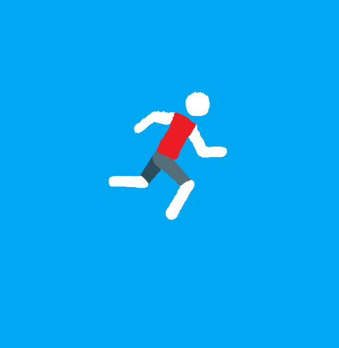
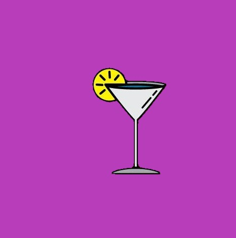
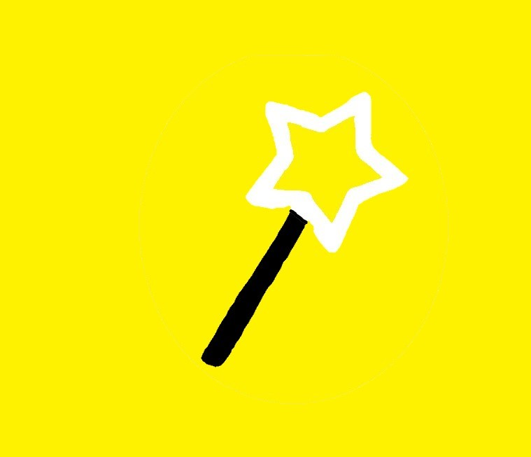
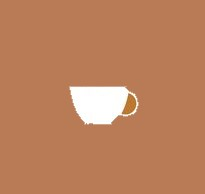

<ion-content padding>
    <i class="fas fa-pen"></i>
    <!-- <ion-icon md="md-create" class="top"></ion-icon> -->
   <br>
<h6>WHAT WOULD YOU LIKE TO DO NOW?</h6>
<div class="teb">
<table>
  <tr>
    
    <td><div class="a">MEAL</div> <br><div class="a">SPORTS</div></td>
    <td><div class="a">DRINKS</div> <br><div class="a">SPECIAL</div> <br> <div class="a">WALK</div></td>
    <td><div class="a">COFFEE</div> <br> <div class="a">EVENTS</div></td>
  </tr>
  
</table>
</div>
</ion-content>
